I have been building scale models, mostly airplanes, since I was three years old. I have built pretty much anything that one can build, from war planes and tanks to battleships and X-Wing star fighters. I quit building when baseball and girls drew my attention in junior high and high school, but the itch to build never really left me. At Texas A&M, I actually found the time to put together a couple of model airplanes with some inspiration provided by the movie Top Gun. A few years after I graduated from A&M, I found myself in a store where I was shopping for something else, when I found a selection of kits including a British Beaufighter, a gorgeous airplane that I had never before built. That was it. So in 1995, I restarted in this hobby, and have not really slowed down ever since.
Back in 2015, I donated three airplanes to a scale model gallery that is located aboard the U.S.S. Lexington Museum in Corpus Christi, Texas.
Some of my completed scale models
U.S.S. Texas 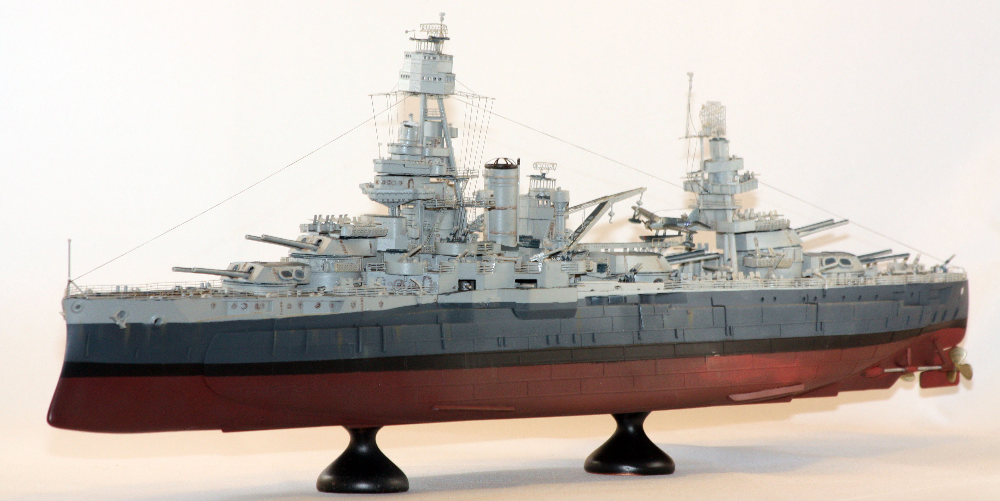
P-47 Thunderbolt 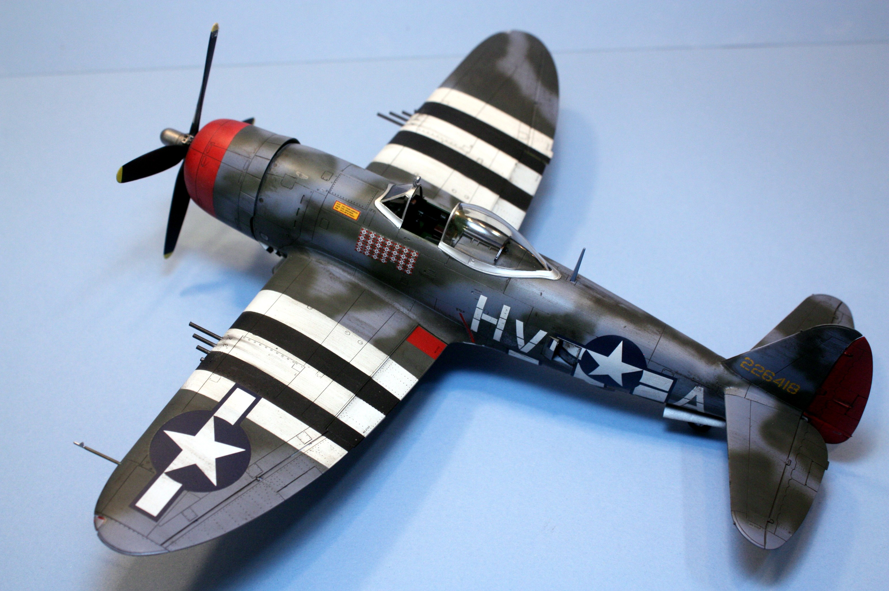
P-51 Mustang 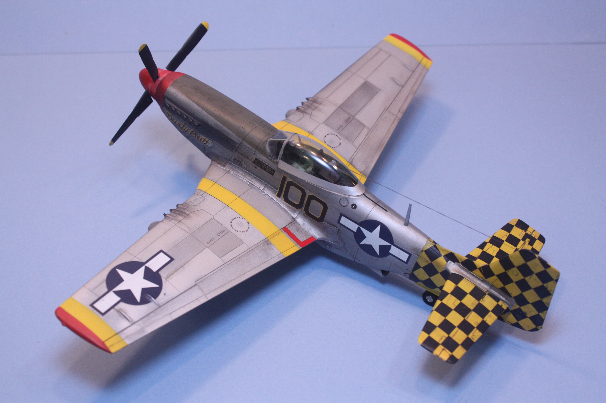
A pair of Spitfires 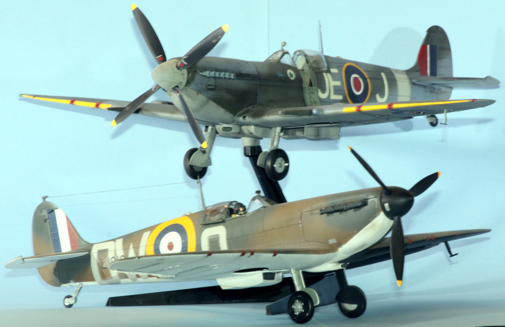
P-39 Airacobra 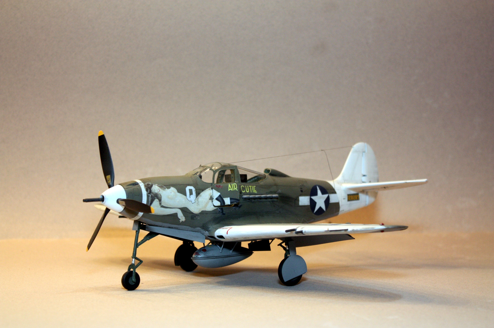
A6M5 Zero 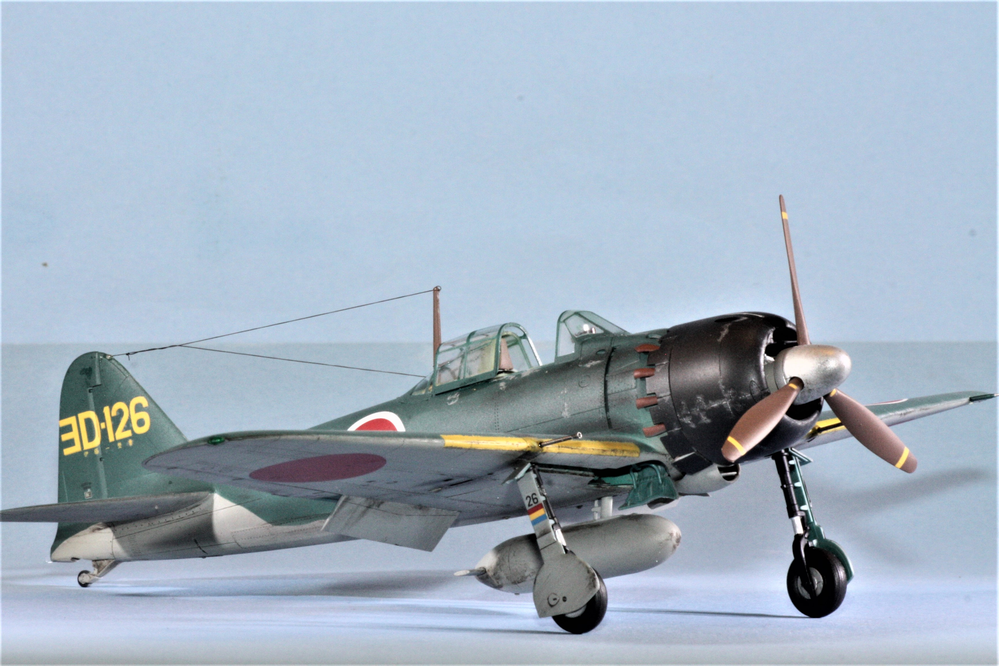
F-86 Sabre 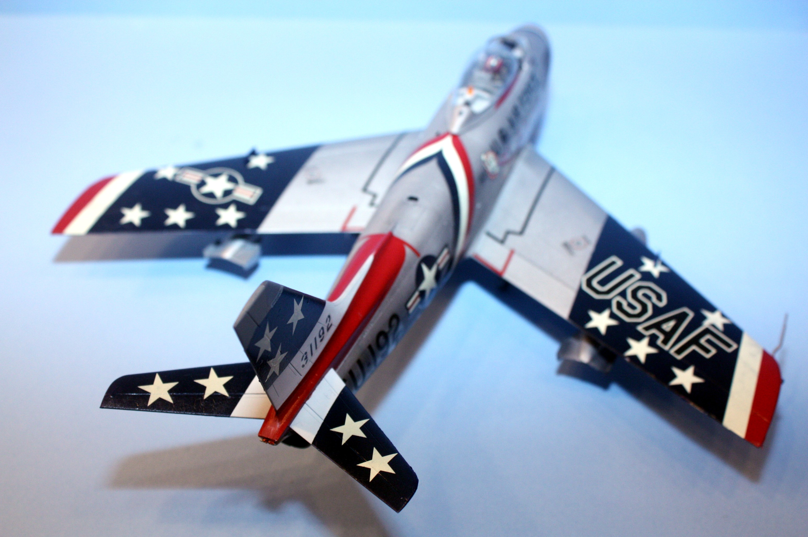
F-16 Falcon 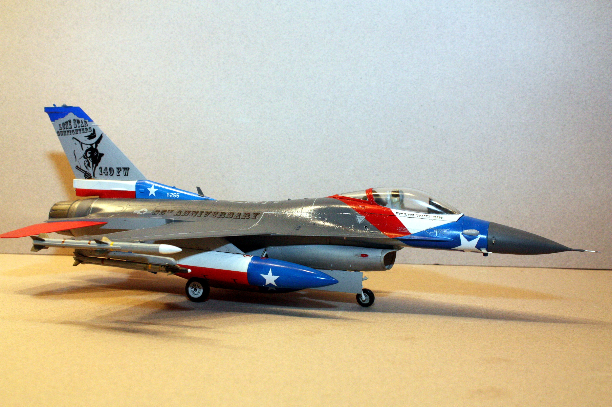
Japanese Zero
He111 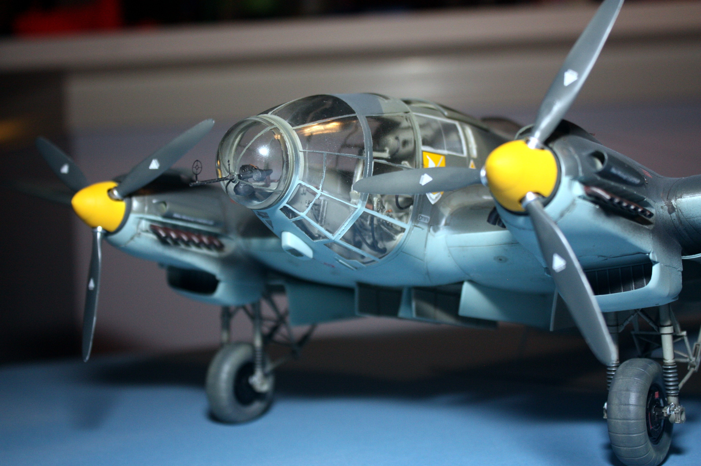
SM79 Sparveiro (in the USS Lexington museum) 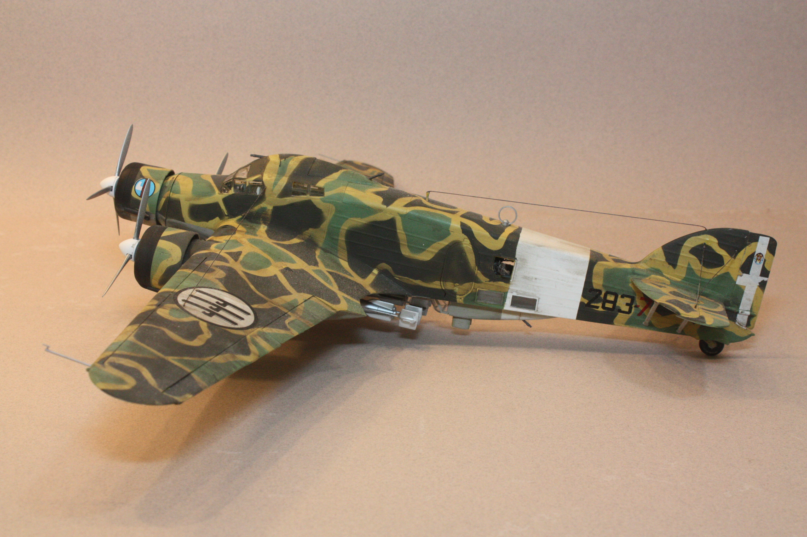
Wellington bomber (in the USS Lexington museum) 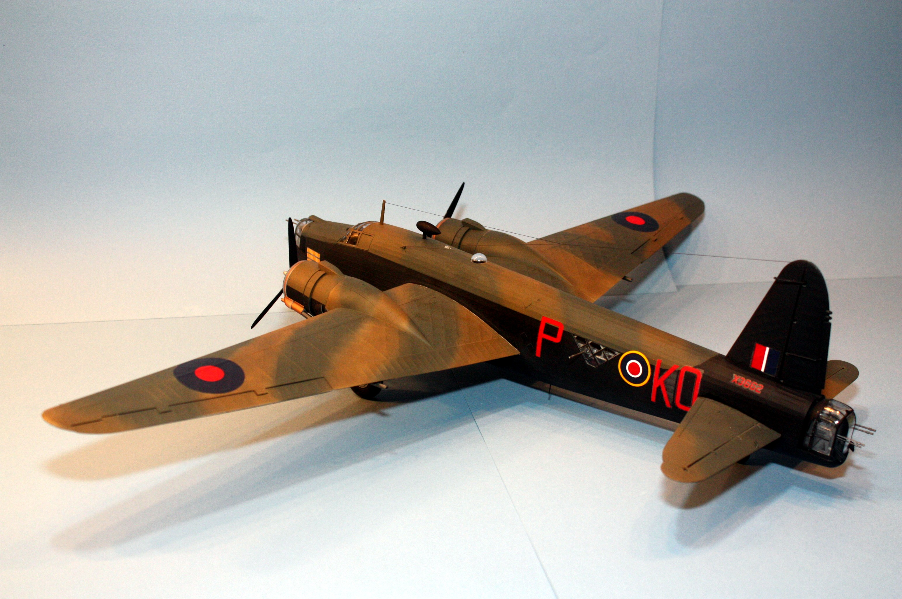